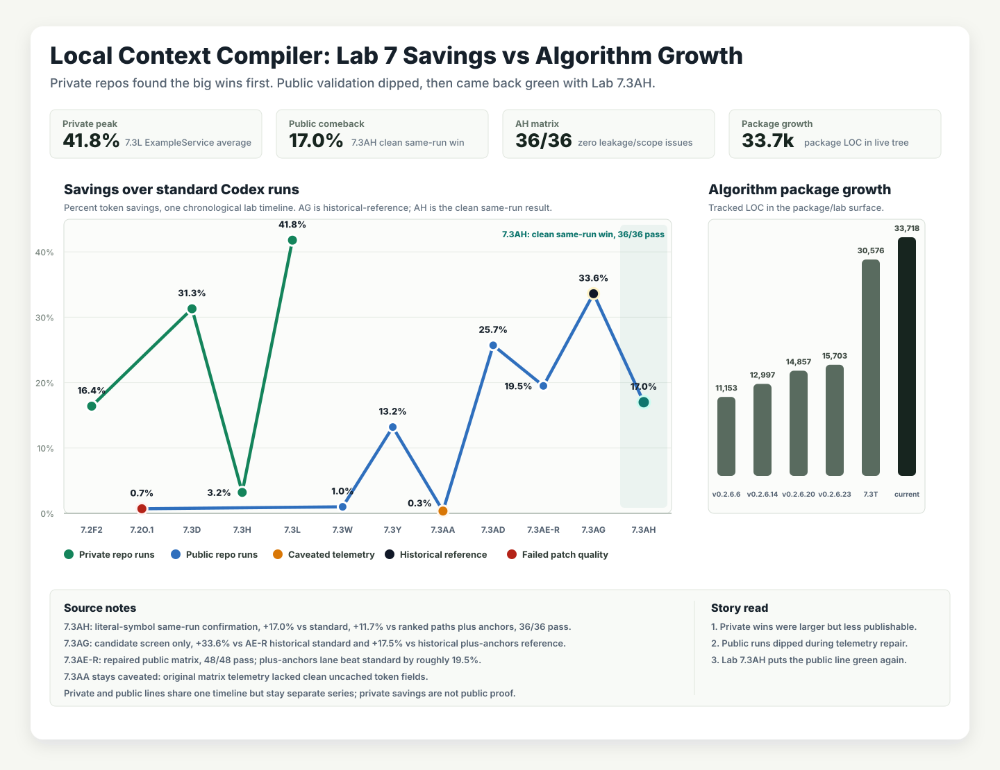

Start with your normal task
Write the prompt you'd already write. Pre-mode keeps it word-for-word — it never rewrites what you asked for.
Source-visible private beta Local-first CPU-powered Cache-friendly
Pre-mode is a local-first context compiler for coding agents. It inspects your repo locally, keeps your task exact, and hands the agent a compact packet — before model tokens are spent. Access is permission-required during development, with open source planned after the private beta hardening phase.
Benchmarks
Coding agents pay a context-discovery tax on repeated work in the same repo. Pre-mode moves that prep local and hands the agent a smaller, better-aimed starting packet.

How it works
Write the prompt you'd already write. Pre-mode keeps it word-for-word — it never rewrites what you asked for.
Locally, Pre-mode ranks the files, tests, and symbols the task actually touches — and skips the rest.
What's useful gets packed into a small, stable packet — the same shape every time — and handed to your agent.
Benchmark strategies on your own prompts and keep the verified local profile that works best on your repo.
"Fix the failing login test"
kept word-for-word — never rewrittenBuilt for cache-friendly agent work
Coding agents often lose value by sending noisy, shifting context on every run. Pre-mode keeps your prompt exact, then compiles a stable packet structure around it — task, primary files, related tests, and literal anchors — so repeated repo work is easier to compare, tune, and cache efficiently.
Your task text stays canonical — Pre-mode never rewrites what you asked for.
Task, primary files, related tests, and literal anchors in a predictable packet shape.
Tuning is partly about finding the packet format that reduces input and preserves useful cache value.
Cache behavior depends on your agent and provider — Pre-mode is designed for reuse, not guaranteed cache hits.
Get started
Everything runs on your machine, and the whole loop is three steps. The README covers every command, flag, and strategy in depth.
Request access on GitHub, then follow the README — setup is local from source.
Run the prompt you'd already write and get a compact context packet back locally.
Start from the generalized path, then verify a local profile that reduces input and preserves cache value on your repo.
Who it helps
Pre-mode is most useful when the same repo comes up again and again, and every task pays a context-discovery cost.
Put your local CPU to work before every coding-agent task and tune for your actual repo.
Give agents a compact starting packet instead of repeating broad repo orientation work.
Keep diagnostics and tuning metadata local while sending only the compact packet downstream.
Start with the generalized path and tune toward better local reductions where your repo supports it.
Request access, compile your first packet, and measure what your repo can reduce.